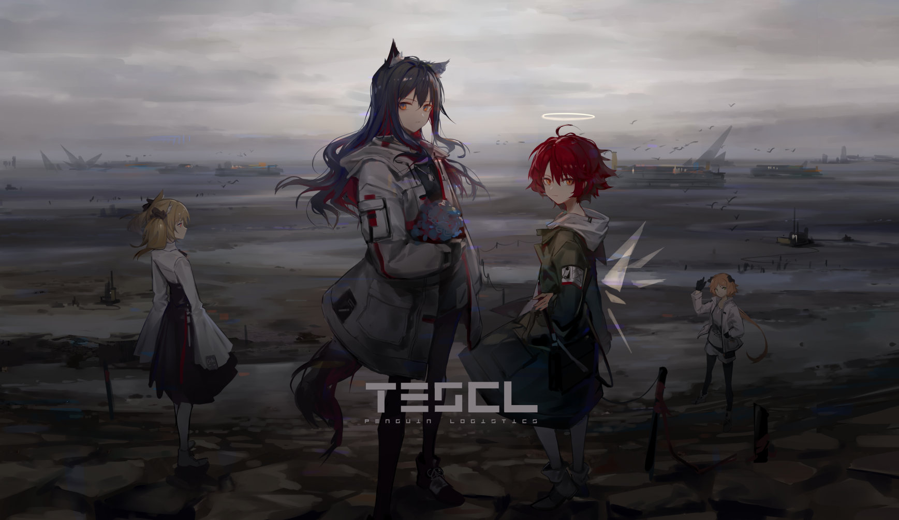

欢迎光临我的个人网站！
————日志

10.10
今天是周四，我们进行了网编的上机课，今天我们学习了个人网页的编写，并且布置了作业，让我们熟悉超链接和书签代码的使用。我觉得十分有趣，只是DW这个软件有些难以上手，我会努力学会它的！
10.14
最近的游戏日常——我爱这个游戏，俺喜欢明日方舟！！！👉
10.17
又是一个周四，今天的上机课我们要运用css做题啦，有点小难，令人头秃——
嘿嘿，不过我感觉我会了那么一点点！
10.19
又是一个风和日丽的周末，今天元气音乐节在我们学习举行，我去现场感受到了音乐的魅力，回来以后感觉更加有动力做网编作业了，哈哈！